Case study: individual capstone thesis, run as a live project with P&G India
PG Shop
Redesigning P&G India's direct-to-consumer e‑commerce platform across 14 brands
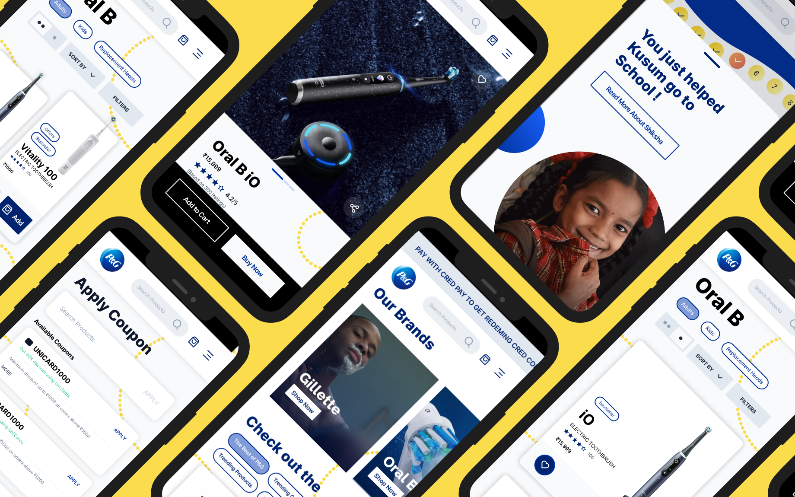
The Challenge
PG Shop (PGShop.in) is P&G India's direct-to-consumer e-commerce platform, covering 14 brands including Gillette, Olay, Oral-B, Tide, Ariel, and Pantene. It launched in 2019 as P&G's test of direct e-commerce in India. This project became its fourth version.
The brief was to propose a UX/UI-led redesign that moved four business metrics defined together with P&G India: PGShop UX, average session duration, cart percentage, and conversion rate.
A heuristic evaluation of the existing site, paired with competitive benchmarking against Amazon, Booking.com, Lush, Cartier, and ITC Store, surfaced a consistent pattern. The platform buried purchase-relevant information under promotional density, gave almost no way to compare or trust individual products, and did nothing to carry P&G's own brand equity into the actual shopping experience.
That last point mattered specifically because of P&G Shiksha, P&G's CSR program since 2005, which has built or supported 2,100+ schools and reached 1.7 million children, 50,000 of them moved to online education during the pandemic, funded in part by every PG Shop purchase. The existing site treated this as a banner, not a moment in the purchase itself.
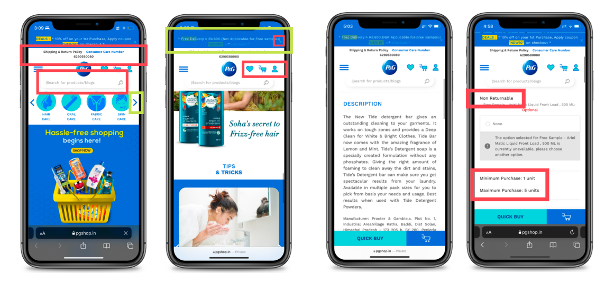
Solution Preview
What shipped was a full information-architecture rebuild around all 14 brands, with two new flows added on top of the existing structure: a personalized gift-box builder called Custom Bundles, and a P&G Shiksha flow that turns the CSR program into part of checkout instead of a banner beside it.
The homepage, product pages, and checkout were redesigned around the same underlying gap: users trusted the P&G name but had no reliable way to compare products or feel guided toward a decision. Three connected Figma prototypes carried the work through, ending not at a plain order receipt but at a Shiksha confirmation moment built as a small interaction rather than a static screen.
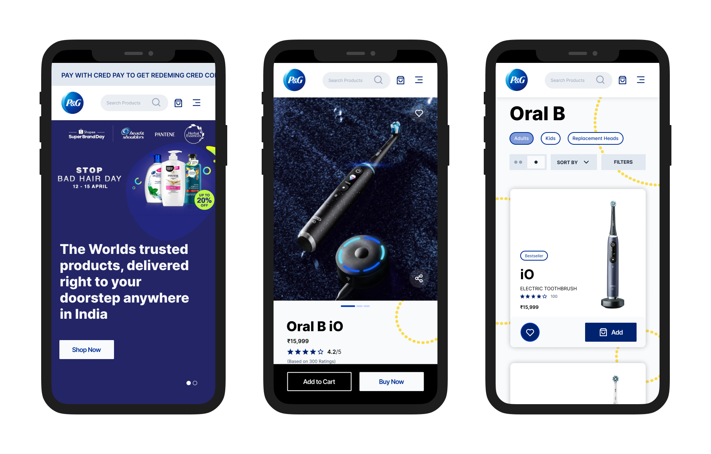
Key Features
Feature
Homepage & Discovery
Problem
The existing homepage led with a shipping policy and customer-care number before anything a user actually needed, forced heavy scrolling to reach the end of the page, and gave no visible difference between active and inactive icon states.
Approach
I moved non-essential information out of the primary view, added scroll-position awareness through a visible scrollbar, and gave users a way to find their delivery location early, surfaced right on entry rather than buried at checkout.
Design decision
I chose a chevron-based carousel over a flat grid for the category row because it kept users aware there were more options without needing to scroll. It came directly out of watching users miss content below the fold in interviews.
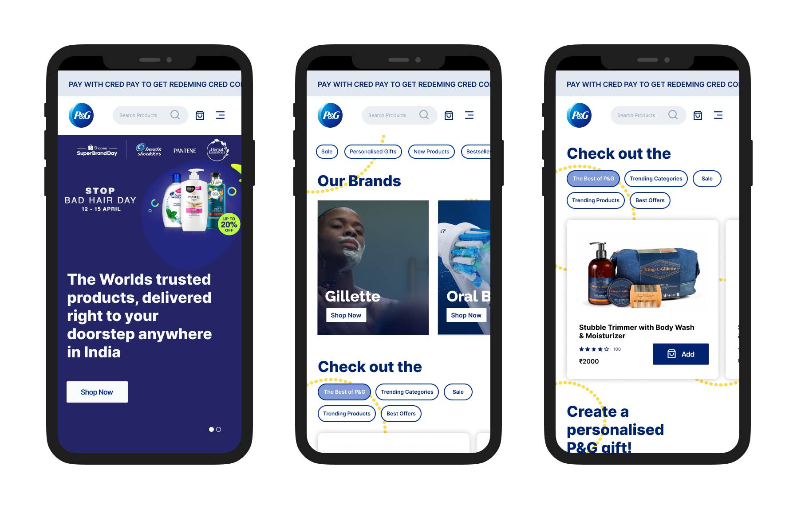
Feature
Product Pages & Comparison
Problem
Users couldn't tell how many other people had rated a product, bestseller tags only appeared on some brand pages rather than consistently, and there was no way to preview product details without reading the full description.
Approach
I extended bestseller and offer tags across every brand page rather than a subset, added a 360° image system to the product view, and introduced a "read more" pattern to shorten dense product-detail text on first load.
Design decision
I gave delivery-date estimates their own visible line at the product-page level, not just at checkout, because interview users specifically stalled out not knowing whether a product would arrive in time. That's a Conversion-tagged fix, not a cosmetic one.
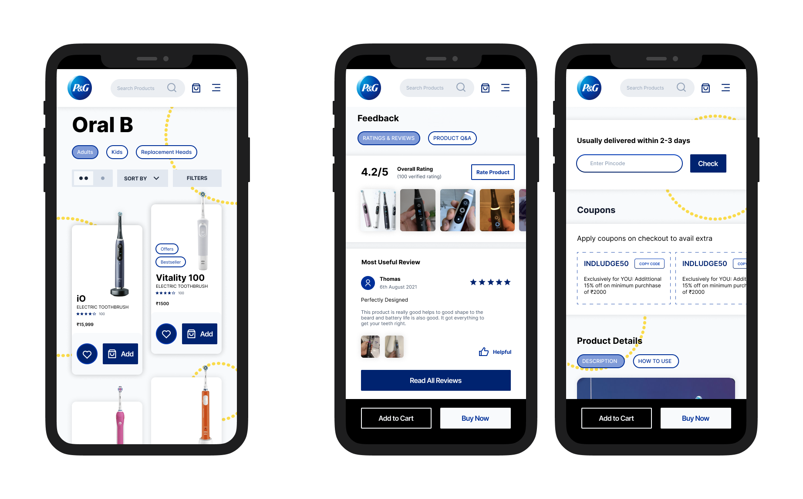
Feature
Checkout, Cart & Payment
Problem
Coupon eligibility was invisible until a user tried and failed to apply a code, and free-sample eligibility only became visible deep in the checkout flow.
Approach
I surfaced available and applicable coupons as their own screen before the payment step, and moved free-sample visibility earlier into the cart itself so users could see what they'd unlock before committing.
Design decision
This wasn't riding on one complaint. It showed up twice, from two different research passes: a checkout journey-mapping session captured a user not knowing which codes were still active, and the same gap surfaced independently in the 30 open points logged after Discovery, where a separate note read that the site should remind users of applicable coupons at the payment stage. Two separate methods landing on the same problem is what made it worth building.
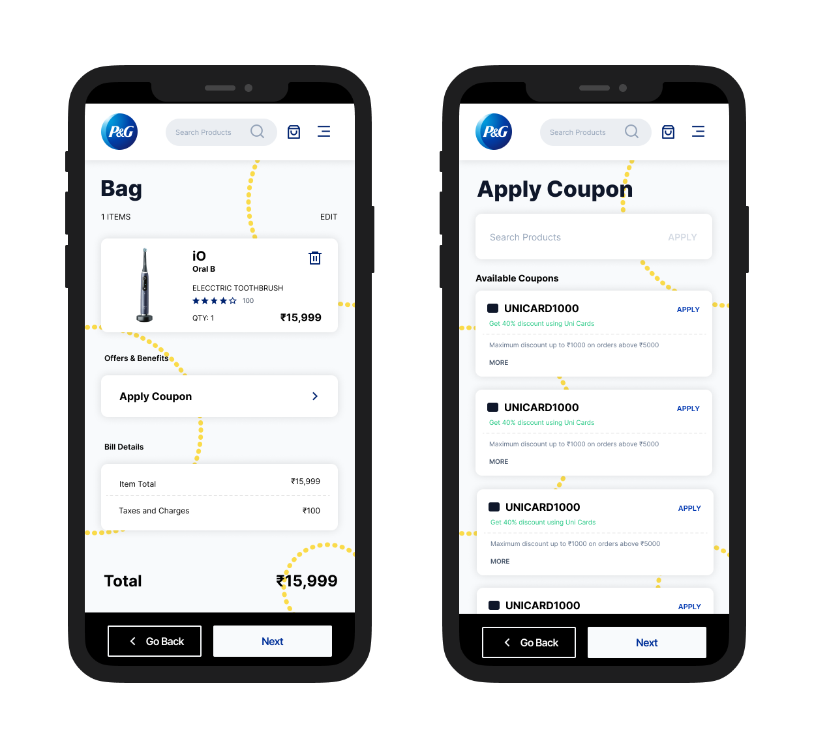
Feature
Sign In / Sign Up & Account
Problem
Logging in redirected users straight to account settings, a page most people had no reason to visit right after signing in.
Approach
I redirected post-login users to the homepage instead. Account settings is somewhere you go on purpose, not somewhere you land by default.
Feature
P&G Shiksha — turning CSR into a product moment
Problem
P&G Shiksha existed on the site as a static banner. It didn't connect to the act of purchasing at all, despite being directly funded by purchases.
Approach
I redesigned the post-purchase confirmation screen to route through a P&G Shiksha moment: a progress-tracker-style visual, styled after how Google Pay shows scratch-card rewards, that resolves into "You just helped Kusum go to School!" with a link to read more about the program.
Design decision
I made this a drag-and-drop confirmation interaction rather than a passive banner, so the contribution felt like something the user did, not something that happened near them. Gamifying CSR can tip into feeling exploitative fast, so I kept the interaction simple and factual, real numbers, real program, instead of adding points, streaks, or a leaderboard. Those would have turned "here's what your purchase did" into a growth-hack loop.
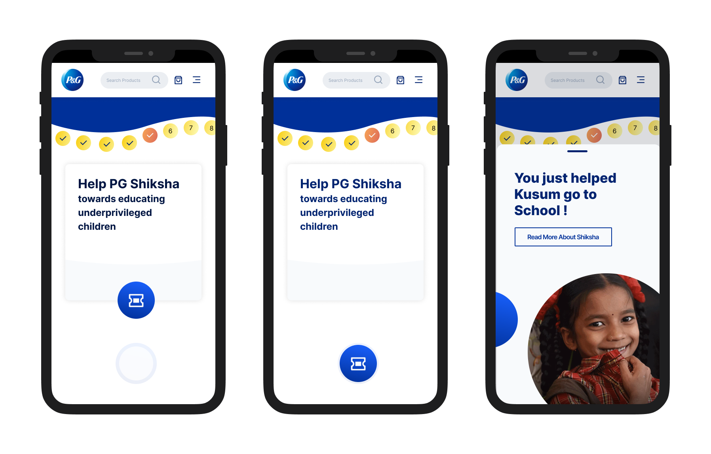
Custom Bundles & Gifting
Extended exploration
It started as a moonshot exercise in the Discovery phase, think big first, check feasibility after, not meant to ship as-is. The idea: since PG Shop carries 14 brands, let a customer assemble a personalized gift box across all of them, choosing products, a box size, an illustrated sleeve design with attribution to the artist who created each pattern, and their own printed message.
Where it landed by the end of the thesis is more complete than a typical moonshot sketch. I carried it through to a genuine information-architecture entry, a full three-step prototype (Choose Products → Design Box → Review & Pay), and a physical packaging system: three box sizes, small for 1–3 products, medium for 3–5, large for 5–7, sized and tested against products actually sold on PG Shop, built as rollover hinged-lid boxes with matching gift cards and packing material, and physically mocked up in cardboard to check they held together.
I kept pushing on this one because it works on three levels at once. For P&G, it's a new revenue lever inside a platform that was otherwise purely transactional, since gifting and personalization both carry a willingness to pay that a standard restock purchase doesn't. For emerging illustrators, the sleeve-design system is a real commercial platform: a student designer's pattern goes on an actual product with their name attributed to it, not just into a portfolio. And for the person buying it, it turns a P&G purchase into the joy of putting together a gift, rather than restocking detergent.
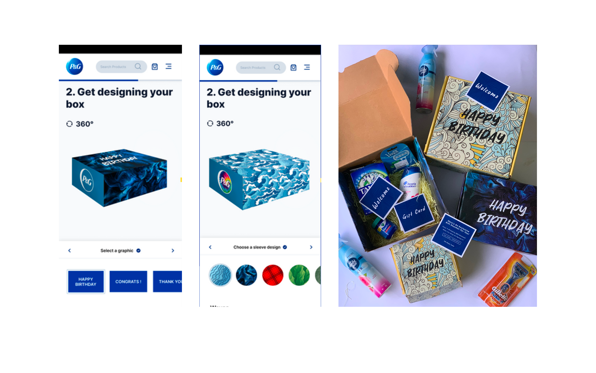
Research
Personas
I built three personas from real demographic and behavioural detail, each with its own comfort/convenience/price weighting.
Amy
Forgets to reorder, runs out of products before realising, low attention span.
Jake
Shops online specifically to avoid the hassle of physical stores; doesn't mind paying extra for convenience.
Gina
Prefers to touch and feel products in-store, difficult to shift her brand loyalty.
Interviews
I interviewed nine users, three per persona, to learn what site content actually stuck with them, what they felt was important, and what they wanted changed.
Journey Mapping
I mapped each persona's journey through four stages, Discovery, Browsing & Product Evaluation, Checkout, and Payment, logging actions, needs, touchpoints, and emotional state at each one, then pulled design opportunities from wherever that emotional state dropped.
One example: Jake's journey through Discovery captured him Googling "oral b electric toothbrush" on his sister's recommendation, landing on a Google Shopping listing instead of PG Shop directly. That produced two opportunities that had nothing to do with the interface itself: improving Google SEO so PG Shop shows up as the first listing, and getting products to appear in Google's shopping carousel at all. A different example, from Checkout: a user who couldn't tell which coupon codes were still active produced the note that a coupon codes page could be a good addition, small, specific, and traceable to one session.
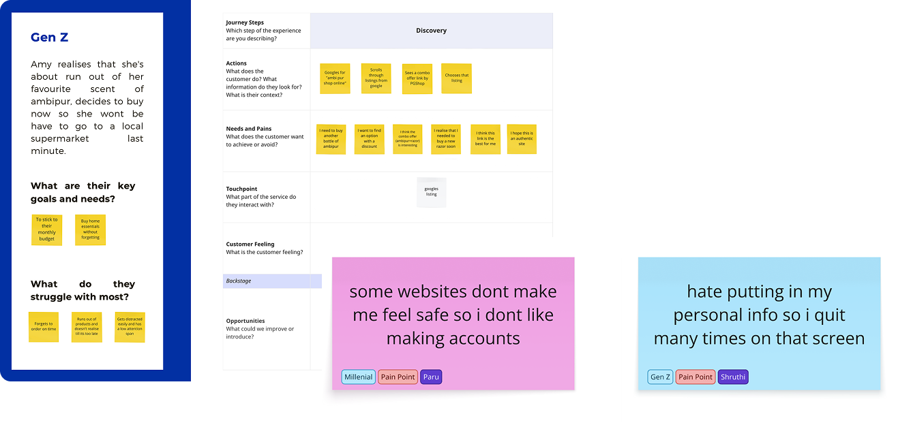
Affinity Mapping
Synthesising all nine interviews produced 19 recurring clusters: Trust/Quality, Time, Offers/Incentives, Reviews, Similar Products, Suggestions, Advt Redirects, Reminders, Accountability, Patience, Frequency of Use, Familiarity, Interesting Apps, Ease/Convenience, Recollection, Explore, Loyalty, Variety, Comparing Products.
The pattern across all 19 was the same one the heuristic evaluation had already surfaced from a different angle: users trusted the P&G name, but had no reliable way to differentiate between similar products or feel guided through a decision. Brand trust wasn't translating into decision confidence.
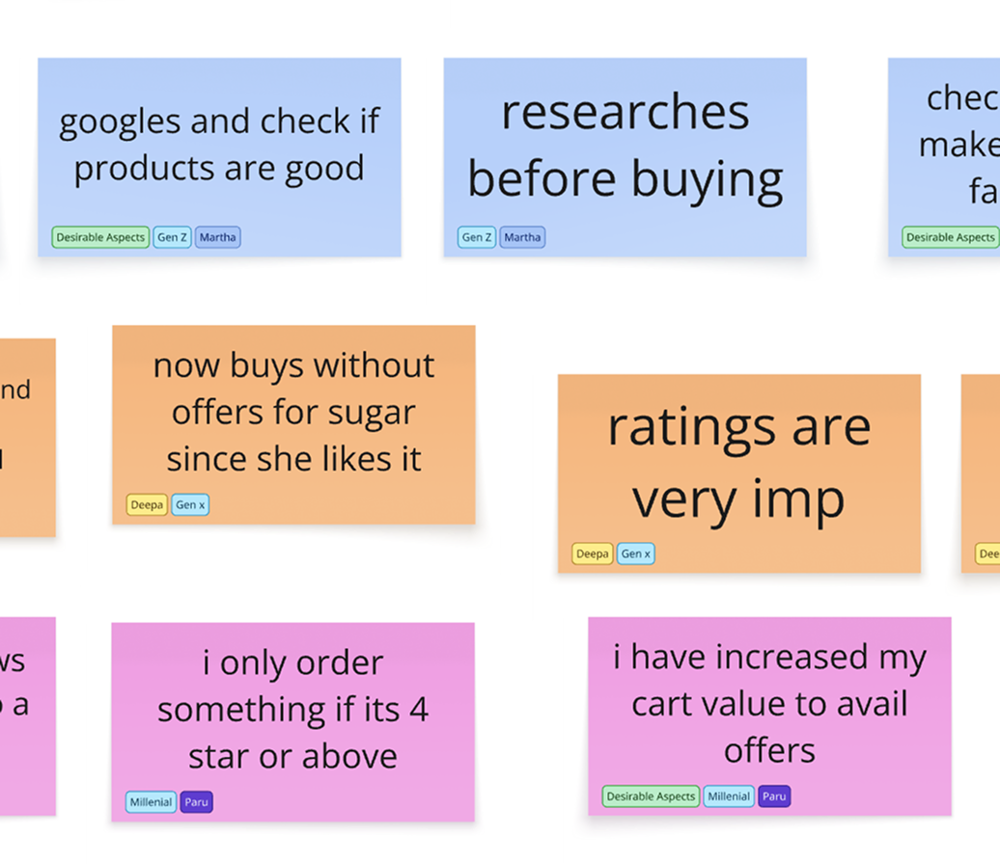
System Mapping
Information Architecture
I rebuilt the IA around all 14 PG Shop brands, adding two paths that hadn't existed before, a dedicated Custom Bundles flow and a P&G Shiksha flow, sitting alongside the existing Search, Cart, Category View, and Account structures. Custom Bundles got its own sub-tree: What is Custom Bundles → Step 1 (Choose Products) → Step 2 (Design Box) → Checkout/Cart.
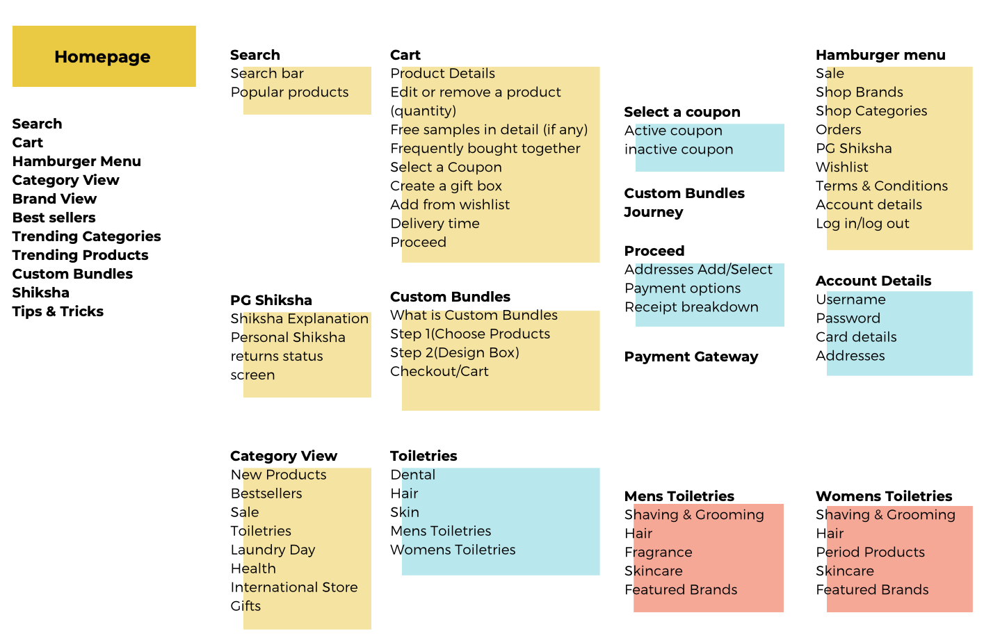
User Flows
Two core flows anchored the redesign, based on how users actually arrive.
Organic search: Homepage → Brand Page → Product Page (reads reviews, adds to cart) → Cart (applies coupon, sees free-sample threshold) → Sign up → Payment → P&G Shiksha confirmation.
Arriving via a product ad in another app: Product Page → Cart → guest checkout (skips sign-up) → Payment → P&G Shiksha confirmation.
Both paths deliberately end at the same place, a P&G Shiksha moment, rather than a plain order receipt.
Visual System
The design system was built on atomic design principles, with light and dark component states, a typographic scale set in Inter, and defined grids for iPhone, iPad, and desktop, built to hold up across screen sizes, not designed mobile-first and stretched to fit.
Low-fidelity wireframes mapped the shell and IA first. High-fidelity wireframes and the component system followed once those structural decisions were settled.
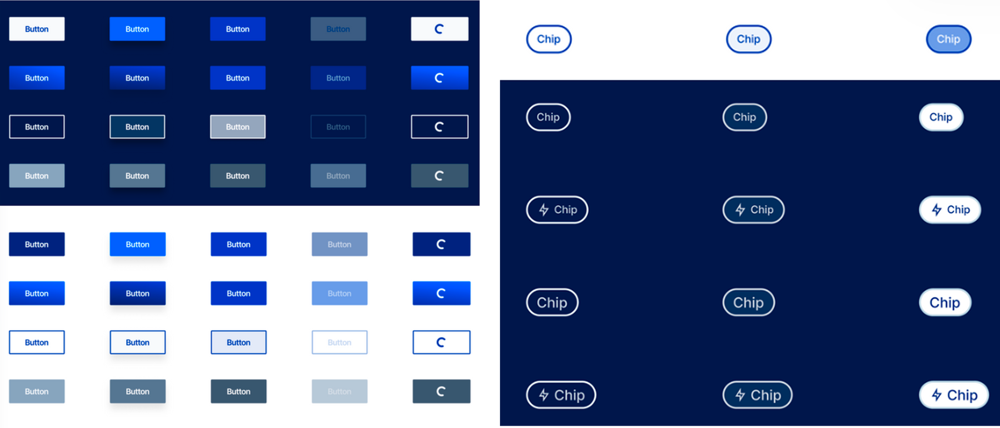
Prototyping
I built three connected prototype flows in Figma.
Buying Journey
The full organic-search path: landing on the homepage, browsing to a brand, selecting a product, choosing between one- and two-column grid views, reading reviews, going through cart, coupon application, guest-or-signup choice, address entry, UPI payment, and arriving at the Shiksha confirmation.
Custom Bundles Journey
The three-step personalised-box flow described above, from product selection through 360° box preview to review and payment.
P&G Shiksha Journey
The drag-and-drop confirmation interaction connecting a completed purchase to its CSR contribution.
Testing & Limitations
This prototype did not go through user testing before the thesis closed. The thesis's own next-steps section lists testing the existing prototype as unfinished work.
The research itself also used convenience sampling, nine interviews across three personas, which was what a solo six-month thesis with no research budget could realistically get. A bigger sample, and specifically one that included users who'd bounced off the site without buying anything, would have made the findings stronger. I didn't have access to that group, so the insights here come from the users I could actually recruit.
Reflection & Next Steps
The thesis identified five next steps: exploring more micro-interactions, detailing out the remaining screens for full site coverage, expanding the design system further, testing the existing prototype, and sending the Custom Bundles design brief onward as a formal proposal.
Looking back, the strongest part of this project wasn't any single screen. It was treating a 14-brand catalog as a systems problem instead of a page-by-page redesign. The IA, the two user flows, and the Custom Bundles exploration all came out of the same instinct: figure out the underlying structure of the business first, then design toward that.
The trade-off is that a system this ambitious, built solo in six months, still has real gaps, the untested prototype and the small interview sample being the two biggest.